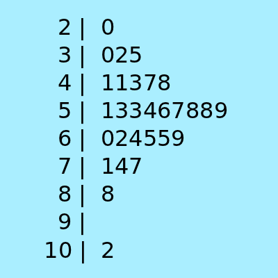
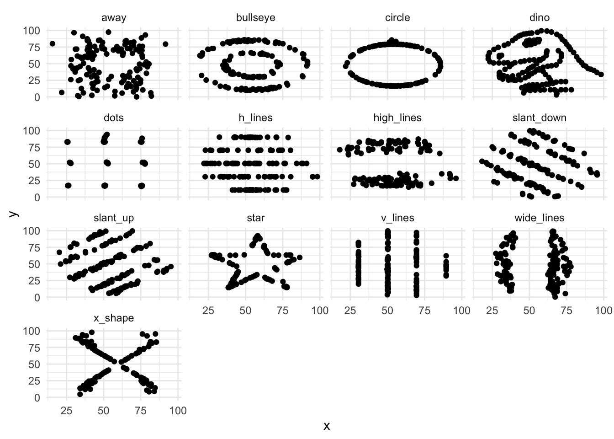
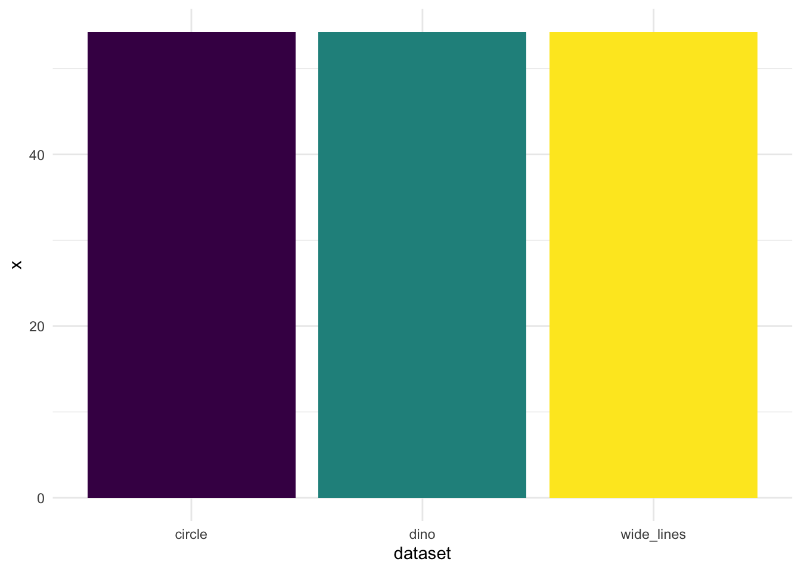
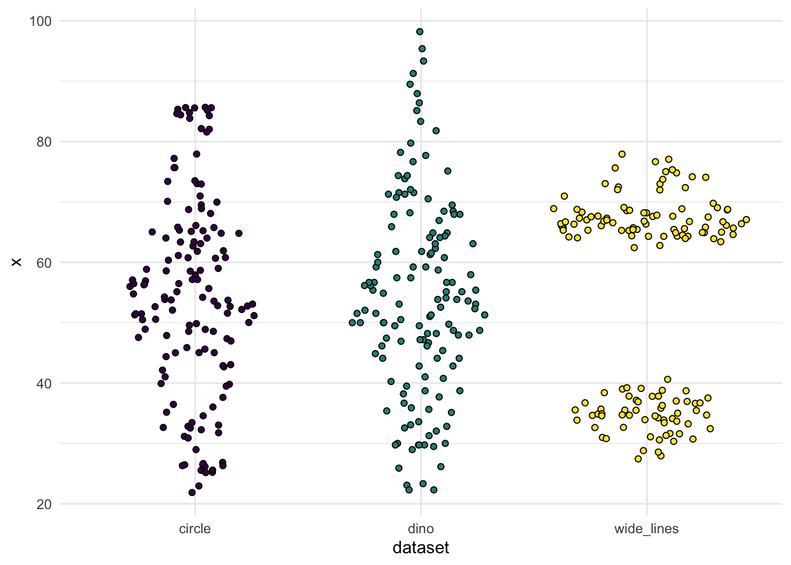
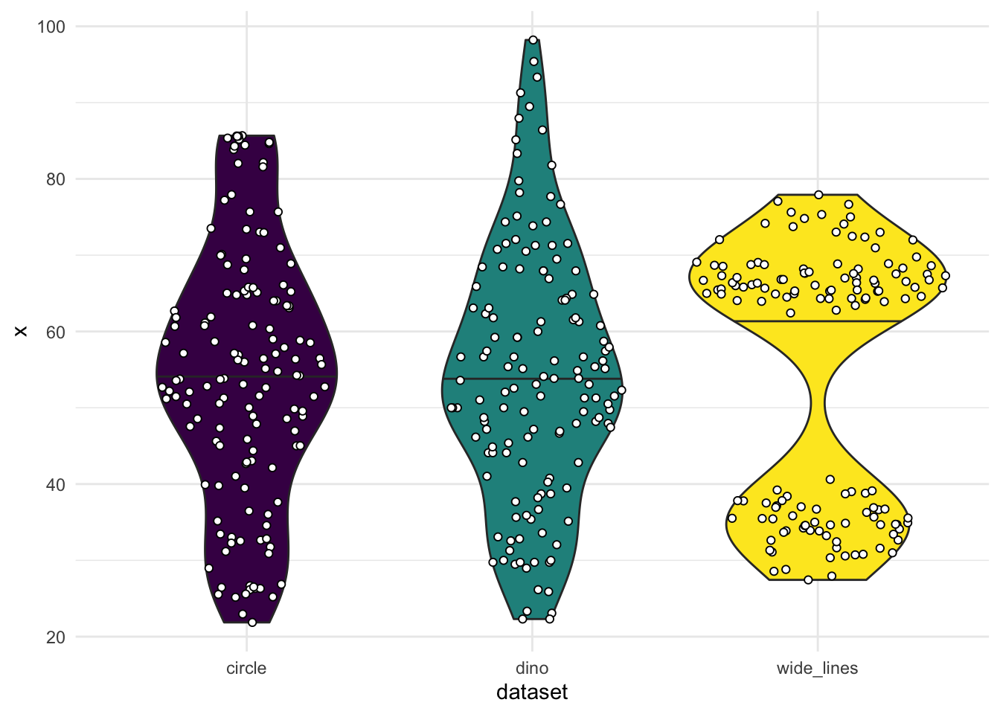

10 Visual EDA
10.1 Reading
10.2 The Role of Visuals in EDA
- Tukey (1977) emphasized visual methods for EDA
- Including not just graphs but also structured tables, such as stem-and-leaf displays
10.3 In terms of our models of EDA
10.3.1 Epicycle of analysis
- Check expectations about the distribution of variables
- Outliers
- Degeneracies (eg, perfect correlation)
- Skew or bimodal distributions
- Non-linear relationships
- Develop expectations about relationships between variables
10.3.2 Phenomena development
- Quickly identify potential patterns
- Contrast potential patterns with noise/uncertainty/imprecision
10.4 Plot Your Data
- Summary statistics almost always focus only on central tendency (mean, median) and dispersion (standard deviation, IQR)
- This is all you would need if the world were made of normal distributions
- (Or at least unimodal symmetric ones)
- The world is not made of normal distributions (Lyon 2014)
- (Or even unimodal symmetric ones)
- This is all you would need if the world were made of normal distributions
- We’ll illustrate this using The Datasaurus Dozen (Matejka and Fitzmaurice n.d.)
library(tidyverse)
library(datasauRus)
library(ggforce)
## We'll need this, but don't want to load it
## install.packages('Hmisc')
theme_set(theme_minimal())
ds_df = datasaurus_dozen- The dataset combines 13 different datasets with \(n=142\) for each
ds_df# A tibble: 1,846 × 3
dataset x y
<chr> <dbl> <dbl>
1 dino 55.4 97.2
2 dino 51.5 96.0
3 dino 46.2 94.5
4 dino 42.8 91.4
5 dino 40.8 88.3
6 dino 38.7 84.9
7 dino 35.6 79.9
8 dino 33.1 77.6
9 dino 29.0 74.5
10 dino 26.2 71.4
# … with 1,836 more rowscount(ds_df, dataset)# A tibble: 13 × 2
dataset n
<chr> <int>
1 away 142
2 bullseye 142
3 circle 142
4 dino 142
5 dots 142
6 h_lines 142
7 high_lines 142
8 slant_down 142
9 slant_up 142
10 star 142
11 v_lines 142
12 wide_lines 142
13 x_shape 142- The datasets have the same means, standard deviations, and (Pearson) correlation coefficient
- p-value of the correlation coefficient is not statistically significant
## This is a more complex summarize() call than we've seen before
## 1. Number of rows
## 2. "Summarize across the columns x and y, using the functions mean and sd"; automatically generates names
## 3. Correlation between x and y
## 4. p-value from a t-test of the null that the correlation = 0
ds_df %>%
group_by(dataset) %>%
summarize(n = n(),
across(.cols = c(x, y),
.fns = lst(mean, sd)),
cor_xy = cor(x, y),
p_value = cor.test(x, y)$p.value) %>%
ungroup()# A tibble: 13 × 8
dataset n x_mean x_sd y_mean y_sd cor_xy p_value
<chr> <int> <dbl> <dbl> <dbl> <dbl> <dbl> <dbl>
1 away 142 54.3 16.8 47.8 26.9 -0.0641 0.448
2 bullseye 142 54.3 16.8 47.8 26.9 -0.0686 0.417
3 circle 142 54.3 16.8 47.8 26.9 -0.0683 0.419
4 dino 142 54.3 16.8 47.8 26.9 -0.0645 0.446
5 dots 142 54.3 16.8 47.8 26.9 -0.0603 0.476
6 h_lines 142 54.3 16.8 47.8 26.9 -0.0617 0.466
7 high_lines 142 54.3 16.8 47.8 26.9 -0.0685 0.418
8 slant_down 142 54.3 16.8 47.8 26.9 -0.0690 0.415
9 slant_up 142 54.3 16.8 47.8 26.9 -0.0686 0.417
10 star 142 54.3 16.8 47.8 26.9 -0.0630 0.457
11 v_lines 142 54.3 16.8 47.8 26.9 -0.0694 0.412
12 wide_lines 142 54.3 16.8 47.8 26.9 -0.0666 0.431
13 x_shape 142 54.3 16.8 47.8 26.9 -0.0656 0.438- But, when plotted, they’re obviously very different
ggplot(ds_df, aes(x, y)) +
geom_point() +
facet_wrap(vars(dataset))
10.5 Bar plots, and better than bar plots
Weissgerber et al. (2015) argue for the importance of plotting data, not just summaries, even in publications
Let’s pull a few datasets out of datasaurus, as though they were groups in a study
cdw_df = ds_df |>
filter(dataset %in% c('circle', 'dino', 'wide_lines'))10.6 A bar plot of mean + 95% CI
ggplot(cdw_df, aes(x = dataset,
y = x)) +
stat_summary(geom = 'errorbar', width = 0.2,
fun.data = mean_cl_boot,
fun.args = list(conf.int = .95)) +
stat_summary(geom = 'bar', fun = mean,
aes(fill = dataset)) +
scale_fill_viridis_d(guide = 'none')Warning: Computation failed in `stat_summary()`:
10.7 Replace the bar with the data
ggplot(cdw_df, aes(x = dataset,
y = x)) +
# geom_point(aes(color = dataset)) +
geom_sina(aes(fill = dataset),
shape = 21L) +
stat_summary(geom = 'errorbar', width = 0.2,
fun.data = mean_cl_boot) +
scale_color_viridis_d(guide = 'none',
aesthetics = c('color', 'fill'))Warning: Computation failed in `stat_summary()`:
10.8 Even fancier: Violin plot
ggplot(cdw_df, aes(x = dataset, y = x, fill = dataset)) +
geom_violin(draw_quantiles = c(.5)) +
geom_sina(shape = 21, fill = 'white') +
scale_fill_viridis_d(guide = 'none')